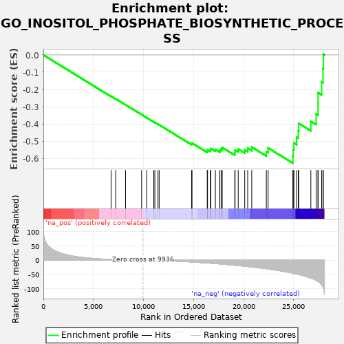

| | | Dataset | PRAD |
| Phenotype | NoPhenotypeAvailable |
| Upregulated in class | na_neg |
| GeneSet | GO_INOSITOL_PHOSPHATE_BIOSYNTHETIC_PROCESS |
| Enrichment Score (ES) | -0.62702256 |
| Normalized Enrichment Score (NES) | -1.5560056 |
| Nominal p-value | 0.0010515247 |
| FDR q-value | 0.06654291 |
| FWER p-Value | 1.0 |
Table: GSEA Results Summary

Fig 1: Enrichment plot: GO_INOSITOL_PHOSPHATE_BIOSYNTHETIC_PROCESS
Profile of the Running ES Score & Positions of GeneSet Members on the Rank Ordered List
| PROBE | GENE SYMBOL | GENE_TITLE | RANK IN GENE LIST | RANK METRIC SCORE | RUNNING ES | CORE ENRICHMENT | | 1 | IPMK | | | 6767 | 2.268 | -0.2394 | No |
| 2 | P2RY1 | | | 7232 | 1.724 | -0.2544 | No |
| 3 | PLCB4 | | | 8210 | 0.799 | -0.2885 | No |
| 4 | ITPKB | | | 9815 | 0.037 | -0.3457 | No |
| 5 | PLEK | | | 10324 | -0.143 | -0.3637 | No |
| 6 | PLCH1 | | | 11029 | -0.623 | -0.3883 | No |
| 7 | IPPK | | | 11134 | -0.714 | -0.3913 | No |
| 8 | SNCA | | | 11452 | -1.011 | -0.4018 | No |
| 9 | PTAFR | | | 11568 | -1.123 | -0.4049 | No |
| 10 | IP6K1 | | | 14812 | -6.180 | -0.5151 | No |
| 11 | PPIP5K2 | | | 14849 | -6.265 | -0.5109 | No |
| 12 | PPIP5K1 | | | 16369 | -9.703 | -0.5565 | No |
| 13 | HRH1 | | | 16400 | -9.785 | -0.5489 | No |
| 14 | NTSR1 | | | 16685 | -10.526 | -0.5498 | No |
| 15 | IP6K2 | | | 16722 | -10.606 | -0.5417 | No |
| 16 | ITPKC | | | 17183 | -11.788 | -0.5477 | No |
| 17 | P2RY6 | | | 17625 | -13.053 | -0.5520 | No |
| 18 | CD244 | | | 17755 | -13.456 | -0.5447 | No |
| 19 | PLCB3 | | | 17867 | -13.804 | -0.5365 | No |
| 20 | POU1F1 | | | 19123 | -17.818 | -0.5656 | No |
| 21 | MAS1 | | | 19151 | -17.943 | -0.5507 | No |
| 22 | PLCB1 | | | 19464 | -18.896 | -0.5452 | No |
| 23 | LHCGR | | | 20115 | -21.149 | -0.5497 | No |
| 24 | PLCL1 | | | 20410 | -22.215 | -0.5406 | No |
| 25 | GPER1 | | | 20816 | -23.688 | -0.5342 | No |
| 26 | PLCB2 | | | 22274 | -29.987 | -0.5598 | No |
| 27 | PTK2B | | | 22452 | -30.762 | -0.5390 | No |
| 28 | PLCD3 | | | 24922 | -45.388 | -0.5870 | Yes |
| 29 | ITPKA | | | 24959 | -45.666 | -0.5481 | Yes |
| 30 | PLCG1 | | | 25029 | -46.150 | -0.5099 | Yes |
| 31 | PLCG2 | | | 25297 | -48.247 | -0.4769 | Yes |
| 32 | PLCL2 | | | 25459 | -49.613 | -0.4389 | Yes |
| 33 | PLCH2 | | | 25501 | -49.943 | -0.3963 | Yes |
| 34 | FGF2 | | | 26718 | -62.387 | -0.3847 | Yes |
| 35 | PLCE1 | | | 27245 | -70.074 | -0.3417 | Yes |
| 36 | PLCD1 | | | 27435 | -73.699 | -0.2835 | Yes |
| 37 | IP6K3 | | | 27437 | -73.783 | -0.2185 | Yes |
| 38 | PTH1R | | | 27800 | -85.939 | -0.1557 | Yes |
| 39 | PLCD4 | | | 27930 | -92.724 | -0.0786 | Yes |
| 40 | ADCYAP1R1 | | | 27963 | -95.060 | 0.0040 | Yes |
Table: GSEA details [plain text format]
Fig 2: GO_INOSITOL_PHOSPHATE_BIOSYNTHETIC_PROCESS: Random ES distribution
Gene set null distribution of ES for GO_INOSITOL_PHOSPHATE_BIOSYNTHETIC_PROCESS